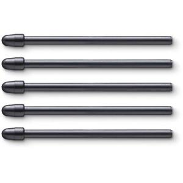
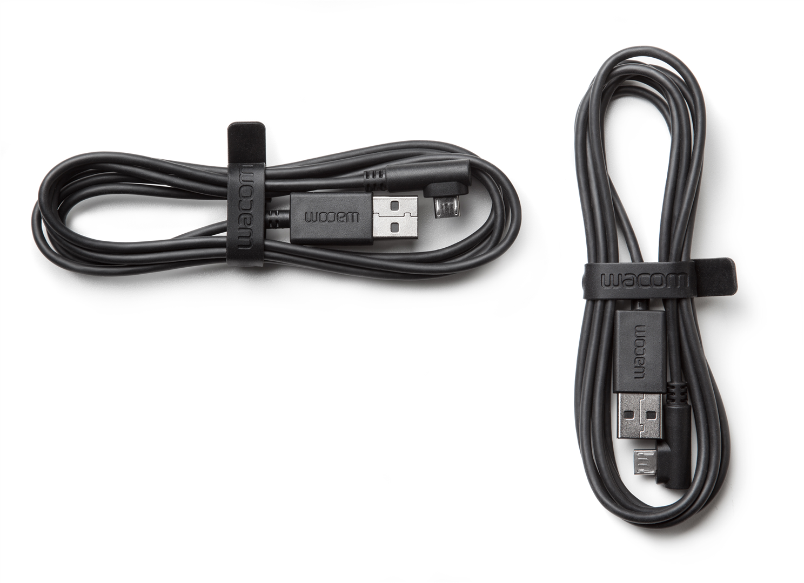

Piešimo planšetės - kainų palyginimas | Pricer.lt
 Mano profilis Prisijungti Mano norų sąrašas LT RU EN LV Katalogas Auto/moto prekės Buitinė technika Dovanos ir aksesuarai Gėrimai alkoholiniai Grožis: kvepalai, kosmetika Gyvūnų рrekės Knygos Kompiuterinė technika Maisto prekės Moteriška avalynė Moteriški drabužiai Prekės vaikams Statyba ir remontas Telefonai Turizmas, poilsis, sportas Vaikų drabužiai, avalynė ir aksesuarai Vaistinė Video, audio, foto Viskas namams ir sodui Vyriška avalynė Vyriški drabužiai o... MES PALYGINOM MĖSA KIAUŠINIAI SVIESTAS GRIETINĖ Ringas Akcijos Leidiniai Pricer.lt Topai Kuponai Tyrimai Kuras Maistas Vaistinės pro-BLOGas Import-Export Kuras Mano profilis Prisijungti Mano norų sąrašas Katalogas Kompiuterinė technika Piešimo planšetės Visi prekiniai ženklai WACOM Lenovo Trust Apple Genius Elmo DELL Palyginti | Pricer.lt
Piešimo planšetės
Rūšiuoti pagal: pardavėjų skaičių (daugiausiai viršuje) Rūšiuoti pagal: pardavėjų skaičių (mažiausiai viršuje) Rūšiuoti pagal: pavadinimą (A - Ž) Rūšiuoti pagal: pavadinimą (Ž - A) Rūšiuoti pagal: kainą (pigiausios viršuje) Rūšiuoti pagal: kainą (brangiausios viršuje) Rūšiuoti pagal: reitingą (aukščiausias viršuje) Rūšiuoti pagal: reitingą (žemiausias viršuje) Rūšiuoti pagal: populiarumąPiešimo planšetės
1 NUO € 66.50 5 parduotuvėsWacom One Medium
Druckempfindliche Stiftspitze mit 1.024 Druckstufen • Kompatibel zu allen gängigen Grafik- und Bildbearbeitungs-Programmen • Für Rechts- und Linkshänder geeignet, Grafik-Tablett...
Palyginkite kainasPiešimo planšetės | WACOM
2 NUO € 1 005.00 5 parduotuvėsWACOM Cintiq Pro 16 UHD EU Graphics tablet Black
p WACOM Cintiq Pro 16 UHD EU Graphics tablet Black /p
p Technical data /p
p Work surface 345 x 194 mm br /
Resolution 5080 LPI /p ...
Piešimo planšetės
3 € 200.94 1 parduotuvėWacom Intuos Art Medium
Intuos Art: Take Your Artwork To Another LevelIntuos Art Pen & Touch SmallSo you’ve already got artistic skills? Show them...
Palyginkite kainasPiešimo planšetės
4 NUO € 133.60 3 parduotuvėsWACOM Bamboo Slate large
WACOM Bamboo Slate large
Palyginkite kainasPiešimo planšetės
5 NUO € 99.90 5 parduotuvėsWACOM Bamboo Slate small
WACOM Bamboo Slate small
Palyginkite kainasPiešimo planšetės
6 NUO € 12.75 3 parduotuvėsRašiklis WACOM Bamboo Stylus Solo4, juodas
LENGVAI RAŠYKITE ANT IŠMANIŲJŲ EKRANŲBamboo Solo yra rašiklis, kuris leis jums lengvai bakstelti, rašyti ar piešti jūsų išmaniajame telefone, planšetiniame...
Palyginkite kainasPiešimo planšetės
7 NUO € 37.49 2 parduotuvėsGenius EasyPen i405X
Genius EasyPen i405X
Palyginkite kainasPiešimo planšetės
8 NUO € 211.50 1 parduotuvėWacom Intuos Pro Small Black
Wacom Intuos Pro Small Black
Palyginkite kainasPiešimo planšetės
9 NUO € 981.00 3 parduotuvėsWacom Cintiq 22HD
Betriebssystem: Windows (32/64 bit) 7, Vista, XP, Macintosh: OS X Version 10.5.8 oder höher, Besonderheiten: a-SI Active Matrix TFT LCD...
Palyginkite kainasPiešimo planšetės
10 € 72.03 1 parduotuvėWacom One Small
Experience a simpler, more natural way of working with your computer and open up a newworld of creative expression with...
Palyginkite kainasPiešimo planšetės
11 € 91.26 1 parduotuvėWacom Intuos Draw Small White
Wacom Intuos Draw Small White
Palyginkite kainasPiešimo planšetės | WACOM
12 NUO € 594.65 6 parduotuvėsWACOM Cintiq 16 Graphics tablet Black Piešimo planšetė
p WACOM Cintiq 16 Graphics tablet Black Piešimo planšetė /p
p Prekės tipas Grafinės planšetės br /
Prekės ženklas Wacom br /
Svoris 1900 g br /
Skiriamoji geba /p ...
Piešimo planšetės
€ 9.99 1 parduotuvėRašiklio WACOM Standard antgaliai, 5 vnt., skirti Pro rašikliui
Šie antgaliai yra specialiai sukurti naudoti su Pro Wacom rašikliais ir jais galima itin lengvai pakeisti jūsų nusidėvėjusį Wacom rašiklio...
Palyginkite kainasPiešimo planšetės
€ 594.55 1 parduotuvėWacom Intuos Pro L
Palyginkite kainas
Piešimo planšetės
€ 367.16 1 parduotuvėGrafinė planšetė Wacom Intuos Pro M SE
Designed for creativity – just the right toolsThe innovative Wacom Intuos Pro pen tablet combines Wacom s finest pen capabilities and...
Palyginkite kainasPiešimo planšetės
€ 108.06 1 parduotuvėWacom Intuos Art Small Black
Wacom Intuos Art Small Black
Palyginkite kainasPiešimo planšetės
€ 99.99 1 parduotuvėWacom Intuos Photo Small Black
Wacom Intuos Photo Small Black
Palyginkite kainasPiešimo planšetės
NUO € 19.99 3 parduotuvėsRašiklis WACOM Bamboo Stylus duo4, juodas
DU VIENAME: LIETIMUI JAUTRIEMS EKRANAMS IR POPIERIUIBamboo Duo yra du viename rašiklis, kuris leis jums lengvai bakstelti, rašyti ar piešti...
Palyginkite kainasPiešimo planšetės
€ 108.06 1 parduotuvėWacom Intuous Comic Black
Wacom Intuous Comic Black
Palyginkite kainasPiešimo planšetės
NUO € 5.00 3 parduotuvėsRašiklio WACOM Standard antgaliai, 5 vnt., juodi
Šie antgaliai yra specialiai sukurti naudoti su senesnės kartos Wacom rašikliais ir jais galima itin lengvai pakeisti jūsų nusidėvėjusį Wacom...
Palyginkite kainasPiešimo planšetės
NUO € 86.79 5 parduotuvėsWACOM Bamboo Folio large
WACOM Bamboo Folio large
Palyginkite kainasPiešimo planšetės
NUO € 886.75 1 parduotuvėWacom Cintiq 13HD
Wacom Cintiq 13HD
Palyginkite kainasGraphic tablet
€ 175.00Wacom CDS-810G Bamboo Folio L large (K100871)
Palyginkite kainas
Planšetės
€ 72.03Wacom One. Connectivity technology: Wired, Working area: 152 x 95 mm, Device interface: USB. Report...
Experience a simpler, more natural way of working with your computer and open up a newworld of creative expression with...
Palyginkite kainasPlanšetės
€ 91.26Wacom Intuos Draw, Intuos. Connectivity technology: Wired/Wireless, Working area: 152 x 95 mm, Devic...
Intuos Draw: Spark Your ImaginationIntuos Draw Pen SmallJust starting out and finding your own style? Intuos Draw makes creating fun....
Palyginkite kainasPlanšetės
€ 142.76Wacom Slate, Bamboo. Connectivity technology: Wired/Wireless, Tablet input type: Pen. Form factor: A...
SmartpadTake handwritten notes and ideas further with Bamboo Slate. Write naturally with pen on any paper, then store, shape and...
Palyginkite kainasPlanšetės
€ 216.50Wacom Folio, Bamboo. Connectivity technology: Wireless, Working area: 210 x 297 mm, Device interface...
Work smarter with Bamboo Folio. Write naturally with pen on any paper, then store, shape and share your notes and...
Palyginkite kainasGrafinės planšetės
€ 127.81Grafinis planšetinis kompiuteris Intuos Photo Black PT S
Palyginkite kainas
Grafinės planšetės
€ 50.54Grafinė planšetė Trust Slimline Sketch
Palyginkite kainas
Grafinės planšetės
€ 99.61Grafinė planšetė WACOM Intuos Draw Blue
Palyginkite kainas
Grafinės planšetės
€ 1 256.08Grafinė planšetė WACOM PL-720OFFICE LCD tablet
Palyginkite kainas
Grafinės planšetės
€ 41.85Grafinė planšetė WACOM Bamboo pad light
Palyginkite kainas
Grafinės planšetės
€ 261.80Grafinė planšetė WACOM STU 500 Sign and Save EN ES
Palyginkite kainas
Graphic tablet
€ 886.75Wacom DTK-1300-1 Cintiq 13HD (DTK-1300-1)
Palyginkite kainas
Computer- & Server-Racks
€ 24.23StarTech CMVER20UD Vertikaler Kabelordner mit D-Hacken, 91 cmschwarz
Erhöhen Sie die Übersichtlichkeit im Rack mit einem vertikalen Kabelordner mit D-Ring-Haken, Fördern Sie die passive Kühlung im Rack durch...
Palyginkite kainasGrafiktabletts
€ 1 169.58Wacom Cintiq 22HD Grafiktablet (54,5 cm (21,5 Zoll) Display, Full HD, USB)
Betriebssystem: Windows (32/64 bit) 7, Vista, XP, Macintosh: OS X Version 10.5.8 oder höher, Besonderheiten: a-SI Active Matrix TFT LCD...
Palyginkite kainasGrafiktabletts
€ 38.40Genius EG-PEN I405 Funk, Grafik-Tablett, PC/Mac, Grafiktablett mit Stift, Induktionsmaus
Bildschirm Seitenverhältnis4:3 Systemanforderung Unterstützte Mac-BetriebssystemeJaMinimum ProzessorPentium 233 Gewicht & Abmessungen Tablet Gewicht348 g Energie Anzahl unterstützter Batterien1Akku-/BatterietypAAA Tablett ÜbertragungstechnikVerkabeltAuflösung2540Arbeitsbereich140 x...
Palyginkite kainasGrafinės planšetės
€ 382.81Grafinė planšetė Wacom Intuos Pro M SE, RU & PL
Palyginkite kainas
Grafinės planšetės
€ 334.24Grafinė planšetė Wacom Intuos Pro M, RU & PL
Palyginkite kainas
Grafinės planšetės
€ 105.46Grafinė planšetė Wacom Intuos Manga Pen + Touch S
Palyginkite kainas
Grafinės planšetės
€ 74.51Grafinė planšetė Wacom Intuos Pen - RU/PL/EN/FR/NL/SE
Palyginkite kainas
Grafinės planšetės
€ 22.75Grafinė planšetė Kanvus Light 54 Kids Graphic Tablet 4x5,5''
Palyginkite kainas
Grafinės planšetės
€ 110.38Grafinė planšetė Aiptek MyNote Bluetooth digital notepad
Palyginkite kainas
Grafinės planšetės
€ 379.53Grafinė planšetė Wacom Intuos 5 Touch M A5
Palyginkite kainas
Grafinės planšetės
€ 80.24Grafinė planšetė Wacom Inkling
Palyginkite kainas
Grafinės planšetės
€ 80.37Wacom plunksnos laikiklis, Intuos/C21/24 (DTK)
Palyginkite kainas
Grafinės planšetės
€ 78.99Wacom One Small 2017
Palyginkite kainas
Pelės ir kilimėliai / Kompiuterinė technika / Kiti kompiuterių komponentai / Komponentai
€ 99.99Wacom CTH-490PK-N Intuos Photo Black PT S(B)
Wacom CTH-490PK-N Intuos Photo Black PT
S(B)
Planšečių priedai
€ 1 840.00Wacom Cintiq Pro 16 UHD, EU
Palyginkite kainas
Graphic tablet
€ 1 665.00Wacom DTH-1620A-EU Cintiq Pro 16 UHD (DTH-1620A-EU)
Palyginkite kainas 1 2 3 4 5 6
Kategorijos
Auto/moto prekės Buitinė technika Dovanos ir aksesuarai Gėrimai alkoholiniai Grožis: kvepalai, kosmetika Gyvūnų рrekės Knygos Kompiuterinė technika Maisto prekės Moteriška avalynė Moteriški drabužiai Prekės vaikams Statyba ir remontas Telefonai Turizmas, poilsis, sportas Vaikų drabužiai, avalynė ir aksesuarai Vaistinė Video, audio, foto Viskas namams ir sodui Vyriška avalynė Vyriški drabužiaiInformacija
Apie mus Parduotuvės Prekiniai ženklaiPARDUOTUVĖMS
TAPKITE PARTNERIU PrisijungtiKLIENTAMS
KODĖL PRICER? Pro-Blogas KontaktaiKontaktai
[email protected]© PRICER
Tai nepriklausomas racionalaus pirkimo ir kainų palyginimo portalas. Mes dirbame Lietuvos žmonių labui, kad kiekvienas gautume geriausią vertę už savo pinigus.
LT RU EN LV Katalogas o... MES PALYGINOM MĖSA KIAUŠINIAI SVIESTAS GRIETINĖ Ringas Akcijos Leidiniai Pricer.lt Topai Kuponai Tyrimai Kuras Maistas Vaistinės
